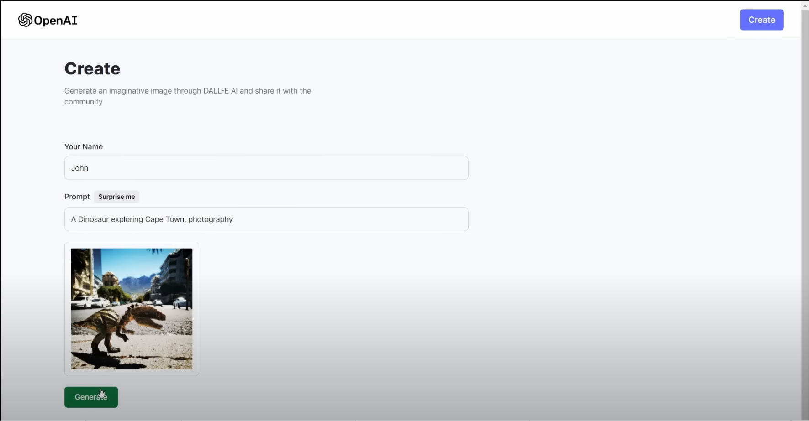

Image Generation Application
GitHub Link
This project is an AI-powered image generation application built using the MERN stack. It leverages OpenAI's API for generating unique and high-quality images based on user-provided prompts. The application is designed to provide an intuitive interface for users to interact with the AI, making it simple to create custom images.
Note: The hosting has been taken down due to the cost of OpenAI credits and hosting services.
1. Key Features:
- AI-Powered Image Generation: Utilizes OpenAI's API to generate images from user input prompts.
- User-Friendly Interface: Provides a seamless and interactive user experience for generating and viewing images.
- Dynamic Storage and Retrieval: Uses MongoDB to store the generated images.
2. Technology Stack:
-
Frontend - React.js:
- A modern JavaScript library for building interactive user interfaces.
- Handles user input, displays generated images, and provides real-time updates.
-
Backend - Express.js and Node.js:
- A robust backend built on Express.js, running on Node.js.
- Manages API requests, handles communication with OpenAI's API, and orchestrates image storage.
-
Database - MongoDB:
- A NoSQL database used for efficient storage of generated images and user data.
- Supports scalability and fast retrieval for a seamless experience.
-
OpenAI API:
- Integrates OpenAI's advanced image generation model to produce high-quality visuals based on text prompts.
- Provides a wide range of customization and creative possibilities.
3. How It Works:
- User Interaction: Users provide a text prompt through the application interface.
- API Communication: The prompt is sent to the backend, where it is forwarded to OpenAI's API for processing.
- Image Generation: OpenAI's API generates an image based on the provided prompt.
- Storage and Display: The generated image is stored in MongoDB and displayed to the user on the frontend.
- Feedback Loop: Users can refine their prompts to generate more specific or creative results.
